The Spirit interface is divided into five tabs. Each tab gives a different view of the same data, but with a different presentation.
Home
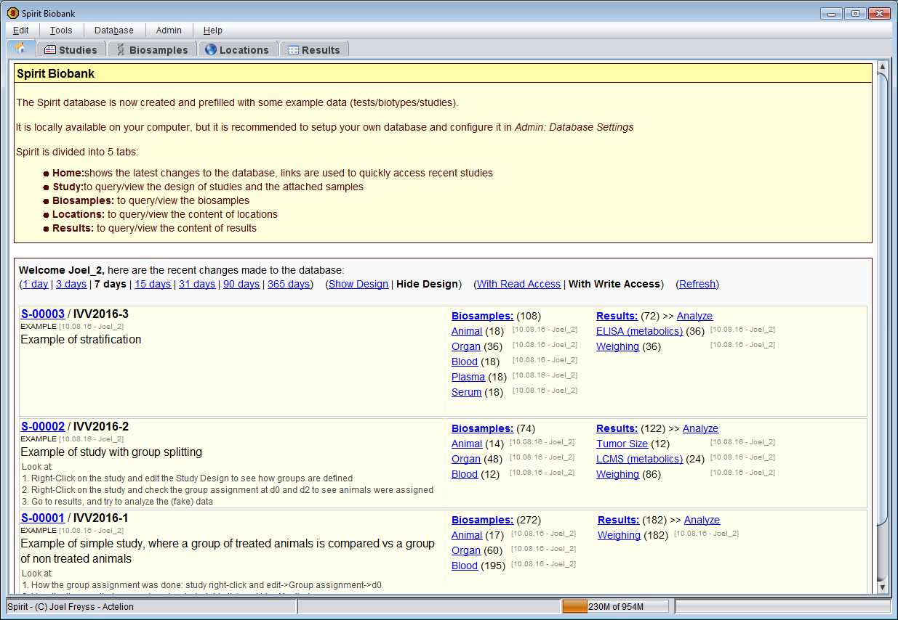 The Home tab is the first thing you see when starting Spirit. It shows the latest changes and allows the user to have a quick overview of the studies being worked on. For each study, it shows the data, that was generated and who did the latest modifications and when.
- Clicking on a study will redirect the user to the study visualization tab and open the clicked study.
- Clicking on a biotype will redirect the user to the biosample tab and display those biosamples
- Clicking on a test will redirect the user to the test tab and display the results of this test. The user can also click on "Analyze" to have a quick analysis of the results.
Study
The study tab shows the study centric view of Spirit. This is where the user can query studies and work on the design.
Visualization
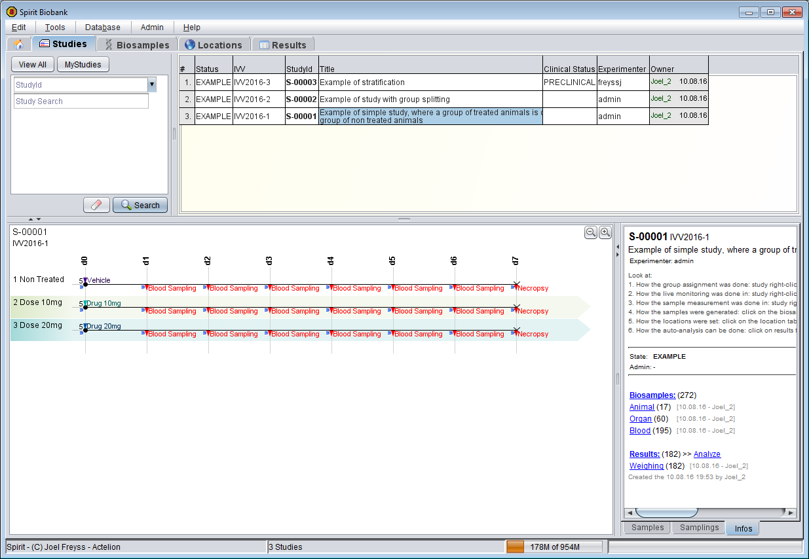 On the study tab, you can query all the studies of the system, provided you have read access on the studies. By default and before making any search, Spirit will show you all the studies where your name is explicitely written in the list of users.
To query for a study, you can either:
- browse through the list of studies by clicking on the studyIds popup: several studies can be selected by keeping the button "Ctrl" pressed.
- type some keywords in the "Study Search" field: Spirit will search all studies for the matching keywords in the title or in any of the other metadata. Complex queries such as "Example and (stratification or splitting)" are possible.
Design
The bottom left part shows the visual design of the study. The visualization may change a lot depending of the type of study. The following studies are given as examples in the system:
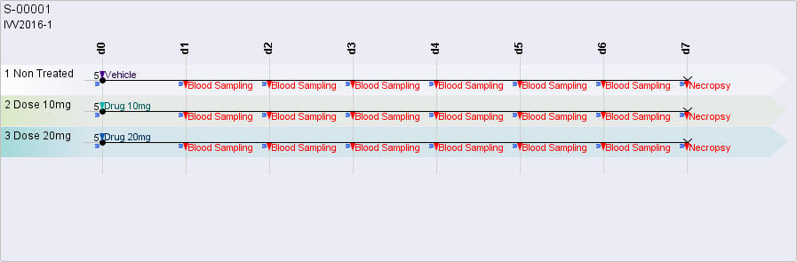This is a basic study with 3 groups, lasting 7 phases. At day0, 5 animals are assigned to each group, and the treatment is given. From day1 to day6, a blood sampling is performed and at day 7, the animals are necropsied. The "w" signs shows that the animals have to be weighted every day.
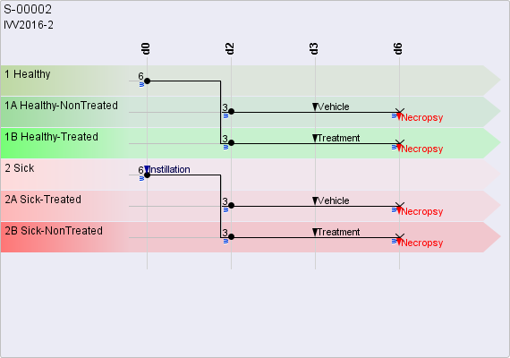At day0, the animals are split into 2 groups (healthy, sick), but it is only at day2 that the animals are split again (Treated, NonTreated), based on some criteria like the weight.
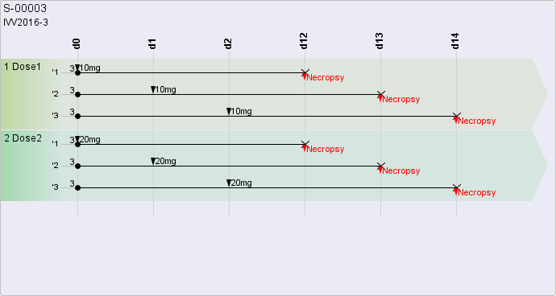When a lot of work has to be done, subgroups or stratification helps to split the work on several phases. Here, each group of 9 animals is split into 3 subgroups.
Infos
The bottom-right of the study tab shows the other infos of the study. There are 3 tabs there:
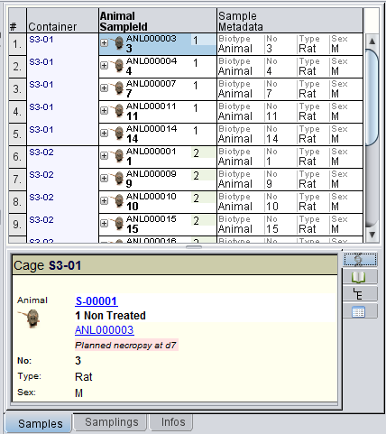This tab shows the list of biosamples attached to the study. The attached samples are the samples, that are follow the actions from the study design. If those samples have some children, it is possible to double-click to view all the samples, that have been collected.
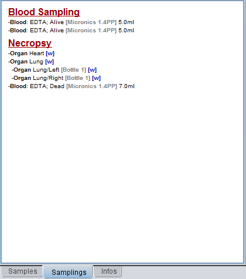This tab shows the sampling templates associated to the study. The sampling templates describes the samples the samples, that should be taken and how they should be taken. This example shows that the "blood sampling" consists of 2 aliquots of 5ml stored in Micronics, and that the "Necropsy" consists of the heart, the lung (left and right stored in one bottle), all of which have to be weighted ("w").
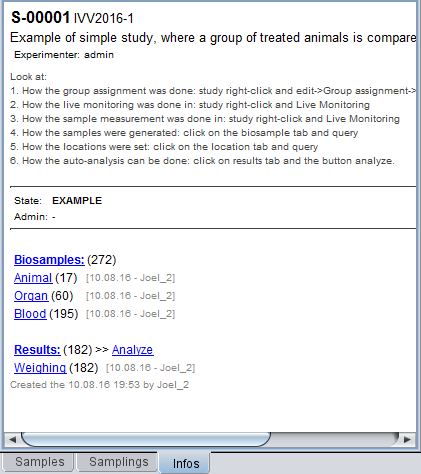This is the default tab, which shows the title, the infos, the workflow state, the user rights and all the data coming from this study. You can click on the "biosamples" link to be redirected to the biosample tab, or on the "results" link to be redirected to the result tab.
Editing
Infos
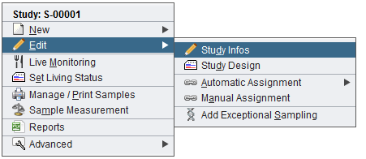 To create/edit a new study, you can either go the menu or right-click on a study to open the contextual menu. Right-click works on almost everything in Spirit, and will make the appropriate popup menu open. If some options are grayed out, it means you don't have sufficient right, and you should contact one of the responsible person to add you on the list.
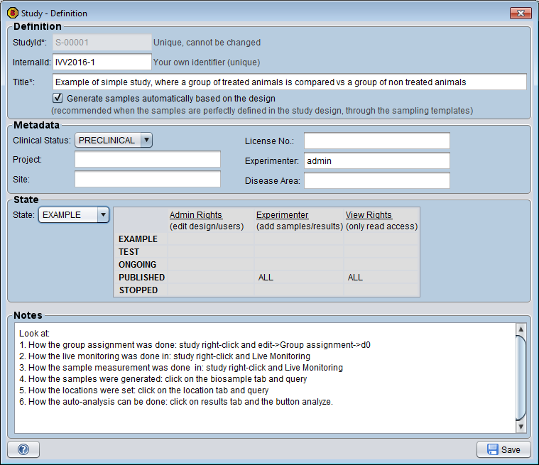 On the study info dialog, it is possible to enter the fundamental information about the study:
- Parameters
-
- StudyId: is the unique Id, which is automatically generated by the system. Its format is: S-{00001}
- InternalId: is the non unique id, used in the organisation, such as an invivo, toxicology number, or the id from an external organisation
- Title: is the description of the study
- Generate Samples automatically.: this option is selected by default, it means that the samples are going to automatically generated as described in the study design.
There are however cases, where the automatic generation and deletion of samples will lead to unwanted effects (studies entered a posteriori, or studies where each patient will get completely different samples). In those cases, it is better to uncheck it, and let the user create the samples manually.
- Metadata
- Study metadata are configurable, so the list of metadata may depends of the Spirit configuration you have. All those fields are searchable and displayed in the study table.
- State
- The worklow states are also configurable by a system administrator. The attached table shows the configured states and the configured rights for each of those states: "ALL" means everybody has the rights, otherwise the rights are restricted to the given role and users.
- User Rights
- The user rights are shown only if a user database is configured (when Spirit is run in a server mode). There you can enter the usernames of the user who have:
- Admin rights: can change the infos/the design of the study and attach samples.
- Experimenter rights: can add samples or results to the study.
- Blind-Details: limited rights on the study, but enough to view the design. The groups are shown, but without the groupNames (only the short abbrevation is shown) and without the compound (only the treatment's abbreviation is shown). This is the recommended role for technicians, who have to apply treatments.
- Blind-All: limited rights on the study. All informations about the groups and the treatments are hidden, including the colors and the abbreviation. It is not even possible to see if two samples come from the same group. This is the recommended roles for technicians, who have to make the observations or other measurements.
- Notes:
- Anything goes here.
Design
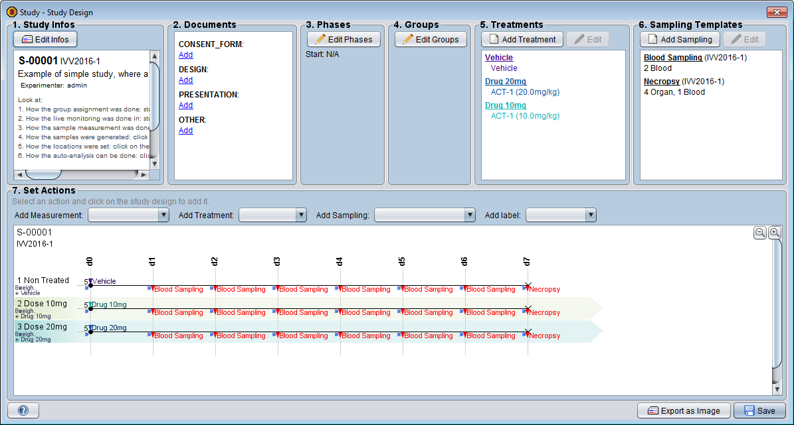 Go to the study design by right-clicking on the study and selecting "Edit->Study Design".
1. Infos
Please look at the section above to have an explanation of this
2. Documents
You can attach as many documents as you want in the study. Documents are categorized in "Consent Form", "Design", "Presentation", "Other" and are for documentation purpose. The consent form is a special type of document. By adding a document, all samples from the study are highlighted in red, with a link to the consent form.
3. Phases
The phases define the timeline of the study. Phases can be formatted as:
- d0, d1, d3:
Use the "day, hour, second" format if the event happen at a precise time. Negative days (d-1) are used for the pre-study observation. d0 is normally used for the group assignment or first treatment.
It is possible to enter hours, minutes and a label by using this format: "d0_6h30 instillation"
It is possible to enter a starting date to have absolute dates for the phases. By using absolute dates, Spirit can indicate when each action should take place (treatments, samplings, measurements).
- 1. Baseline, 2., 3. EOT:
- Use this format when actions don't take place at exact dates, but at some point of time. The phases become markers for the baseline, end of treatment, first visit, ...
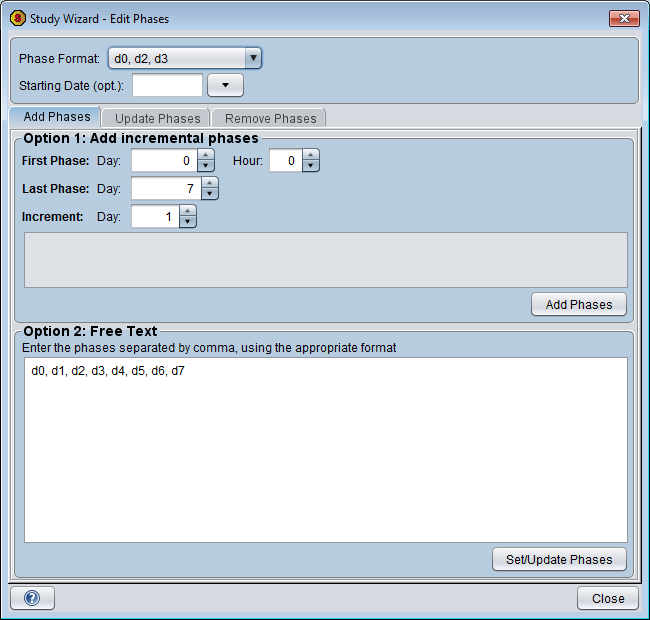
To add phases, right click on the table and select "add rows". You can also use the up/down keyboard to add phases at the bottom/top of the table.
To remove phases, right click on the table and select "delete rows". You can also click delete on the keyboard to remove the selected phase. Make sure you have no samples or results attached to that phase.
To rename, simply select the phase and type the new name.
4. Groups
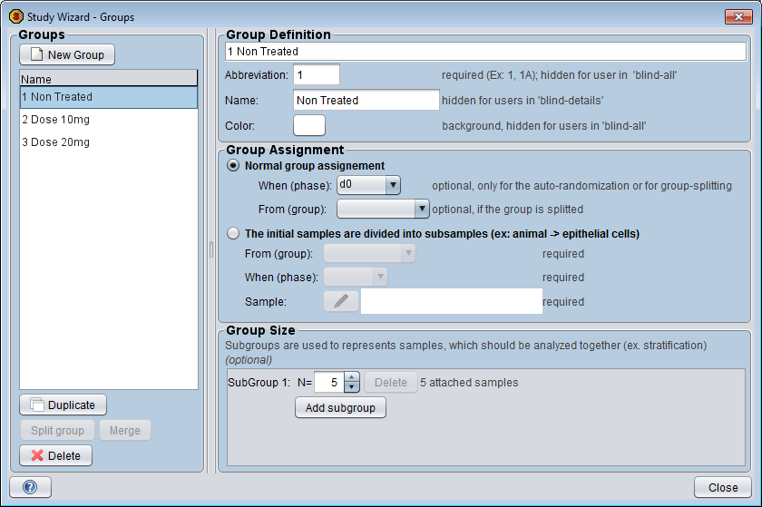 When similar actions (same treatment, same sampling, same measurements) take place on several biosamples, those biosampes should be put together in a group.
Each group needs to be defined with the following attributes:
- Group Definition
-
- Abbreviation: a short and unique id such as 1, 2, 3 or 1A, 1B. This is the identifier shown to the blind experimenter or displayed next to the sampleId throughout the application.
- Name: is the description of the group such as: Control, Sham, ...
- Color: is the background color used for the group and for the cage labels
- Group Assignment
- When and how the specimen are assigned to this group? This feature is only useful if the experimenter wants to use the automatic group assignment, or for visualization purpose.
- Normal group assignment: the phase indicates when samples are attached to this group; the phase is optional if it is undefined. For studies where a group of animals (ex: sick) is splitted into 2 new groups (ex: treated and non-treated), you can indicate from which group this group originates.
- The initial samples are divided into subsamples: this is a special scenario to indicate that the attached samples will be divided into other samples, that will be treated/analyzed over time. Example: a study of animals, where patches of skin are treated with different treatments.
- Group Size:
- This indicate the number of subgroups and the number of samples expected to be attached to each of them. The subgroups are used for samples, that should be compared together, but where each subgroup show some changes in the actions. Example: stratification.
5. Treatments
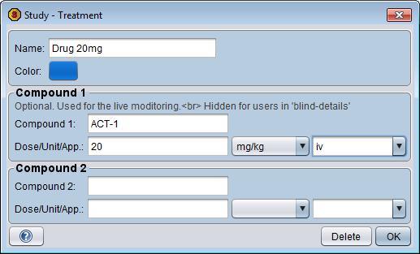 Treatment are identified by:
- Name: short and selft explanatory name to describe the treatment.
- Color: this is how the treatment will be shown in the design and to the experimenter.
- Compound 1, Conpound 2: are the reference identifiers of the compounds. This info is hidden from users with blind-details rights.
- Amount / Unit / Administration: If an amount and a unit, Spirit calculates the amount to be given based on the weight.
6. Sampling Templates
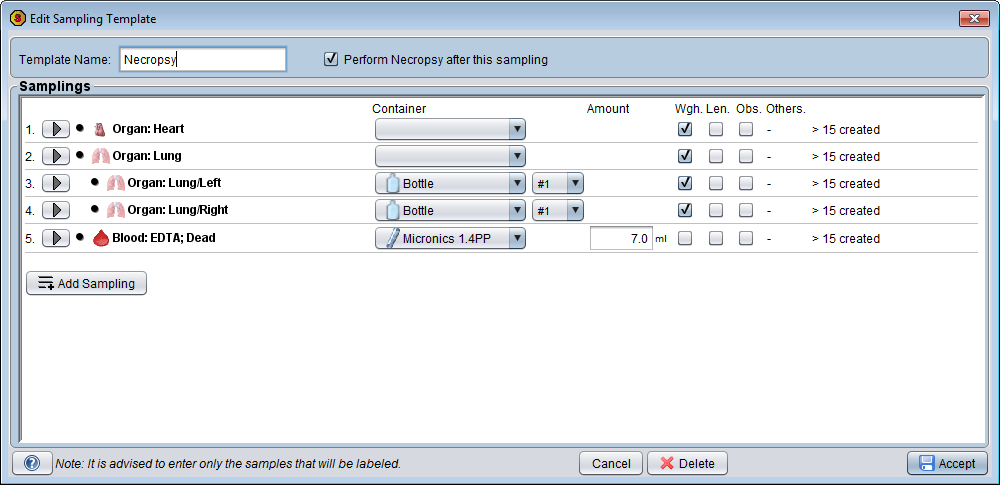 The sampling templates describes the samples to be taken. When you click the button "Add Sampling", you can either decide to start from an empty template or to import a template from a previous study and modify it.
You should name the template with a self-explanatory name, and specify if it is a necropsy sampling. After a necropsy, the animal's status becomes unavailable.
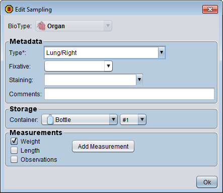In each template, you may define any number of samples. To add a new sample, you can either click on "Add Sample" or click on the button next to each sample, and select "duplicate". For each sample, you must specify:
- the biotype
- the metadata, amount, comments The metadata depends of the selected biotype.
- Container: If the sample to be generated has to be kept, you must specify the type of container (matrix, fluidx, eppendorf, ...). If the container can contain several samples (bottle, bags, cassette, slides), you must specify the container's number. For example, the lung and the heart can be stored in the same bottle (#1) or in 2 separate bottles (#1 and #2).
- Measurements: When the sample is collected, it is possible to perform some measurements, such as measuring the weight, the length, some observations, or any other other measurement on one of the defined test. This list of measurements is used in the "sample measurement" dialog.
7. Actions
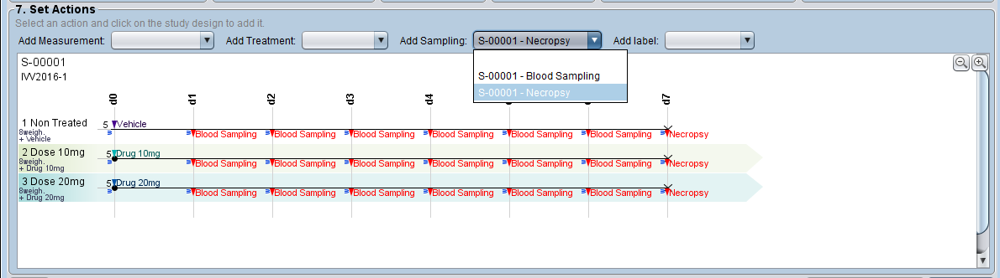 Once the treatments, sampling templates are defined, the user can specify on which groups and when those actions have to be performed.
To add an action, select one of the option at the top, and then click on the study design at the intersection of a group and a phase to indicate the action to be taken.
- Add measurement: Weighing, Food, Water or on any other predefined test. Those measurements are done on the attached samples during the "live monitoring" and results are retrievable for analysis.
- Add treatment: select one of the treatments defined before and the group/phase to perform it. The treatment is displayed above the timeline.
- Add sampling: select one of the sampling's template defined before and the group/phase where the sampling has to be done. The sampling's template is displayed below the timeline in red. If the template is marked as "Necropsy", a cross shows the end of the timeline.
- Add label:you can type some text and have it displayed on the study. Labels are purely informative.
Group Assignment
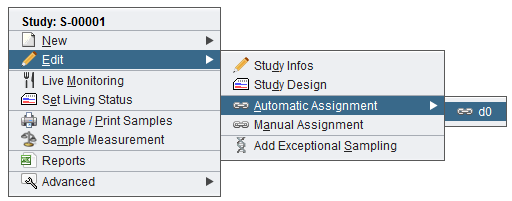 To attach biosamples to the study, right-click on the study, and select "Edit->Automatic Assignment" or "Edit->Manual Assignment".
- Automatic Assignment: The automatic assignment guides the user through a wizard to randomize the assignment based on some criteria like the weight or on some other data. This option is only valid on the phases, where groups are set to be assigned as defined in the group section.
- Manual Assigment: This option can be used anytime.
Samples can only be attached to one study and to one group. To reuse the same sample across 2 studies or groups, the trick is to clone the samples. Example: to use ANL0001 in 2 studies, it is cloned to ANL0001A and ANL0001B (both inheriting from ANL00001). This process is automatically performed by Spirit.

Automatic Assignment
The automatic assigment wizard guide you through the steps of attaching the samples to the groups.
1. Parameters
 The first part of the wizard gives overview of the groups to be assigned. You can enter the biotype of the samples to be randomized.
The first part of the wizard gives overview of the groups to be assigned. You can enter the biotype of the samples to be randomized.
2. Randomization Data
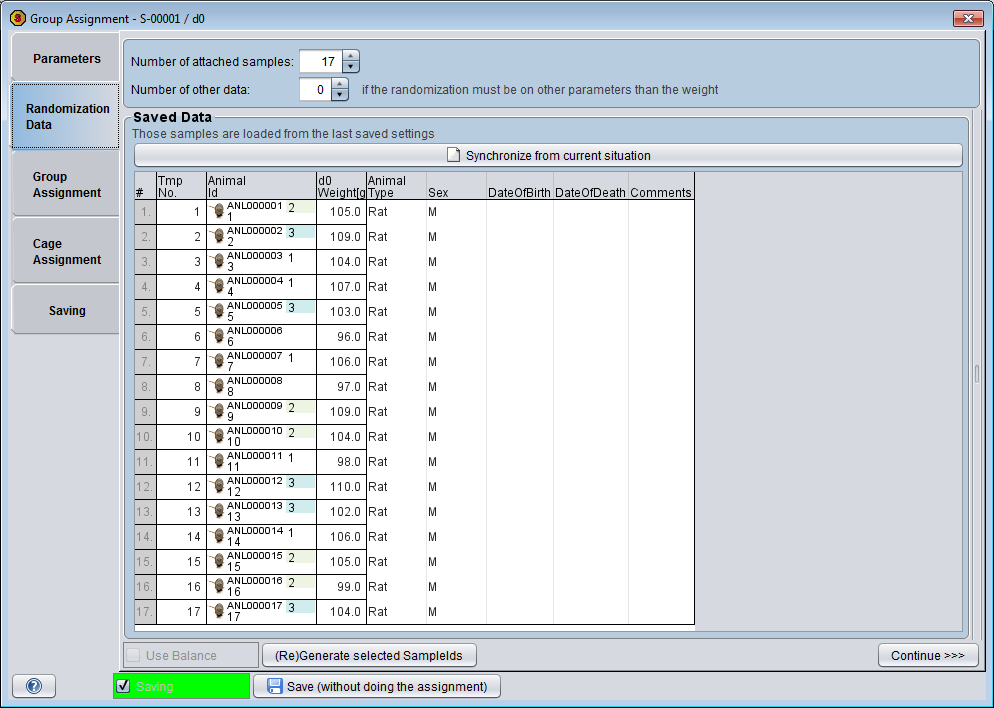 The second part of the wizard is where you enter the randomization data.
- Number of attached samples: By default, this number shows the number of samples to be randomized. You can increase this number to start with more samples. Extra samples will not be assigned to a group (reserve).
- Number of other data: By default, the randomization is done on the weight only, but you can randomize over other criteria (blood pressure, ...).
- Synchronize from current situation: Expert feature. This tab shows the historic data, which was saved the last time you came to this dialog. If the samples were later modified, you may want to synchronize the historic data with the data currently in the database. This button is only enabled if there are samples already attached to the study.
- Use Balance: You can configure a Mettler-Toledo to weight the samples on the fly. See Annex / Balance Configuration to see how to configure an external balance. The balance configured, this option is enabled by default, and the weight is entered automatically.
3. Group Assignment
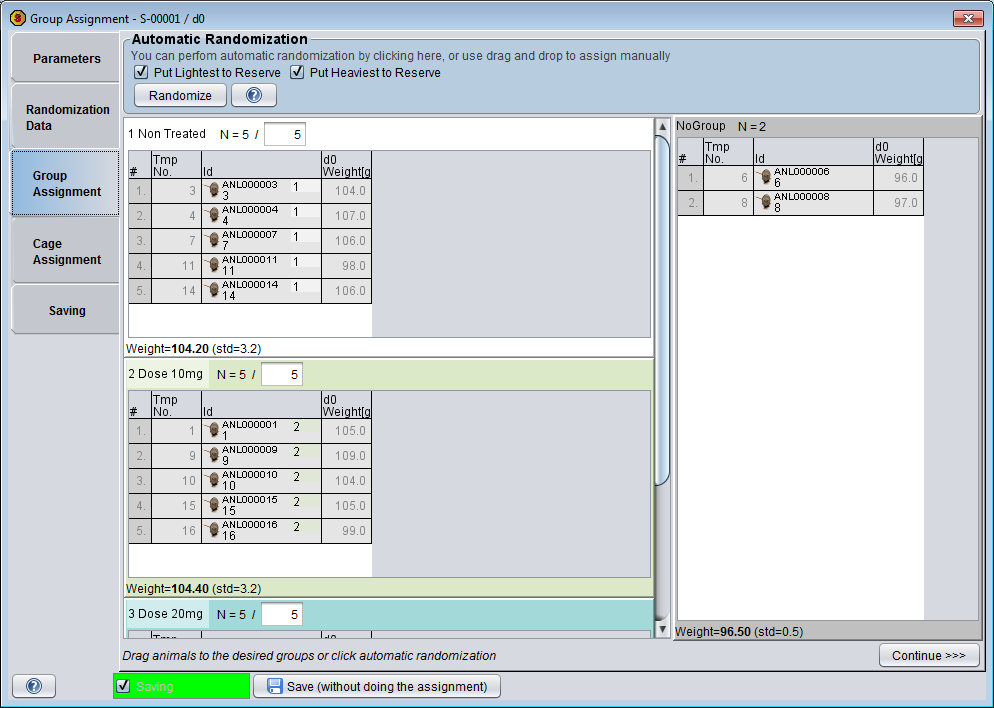 The third part of the wizard is where the user makes the group assignment.
- Put Lightest / Heaviest to Reserve: If you have more samples than needed, checking those boxes will put the extrema (compared to the average) in the reserve. Uncheck them if you want to consider all specimen in the randomization
- Automatic Randomization: Click to let Spirit do the randomization. It is possible to have a different result everytime this button is clicked due to the random permutations used in the algorithm.
Spirit uses a simulated annealing algorithm to tests thousands of permutations until each group share similar characteristics (mean, standard deviation). The optimal randomization is the randomization, minimizing the following formula:

The group assignment can be done manually partly of fully, by dragging the sample from group to groups. You can also right-click on the sample and select "Fix group", so that the randomization keeps those samples untouched.
4. Cage Assignment
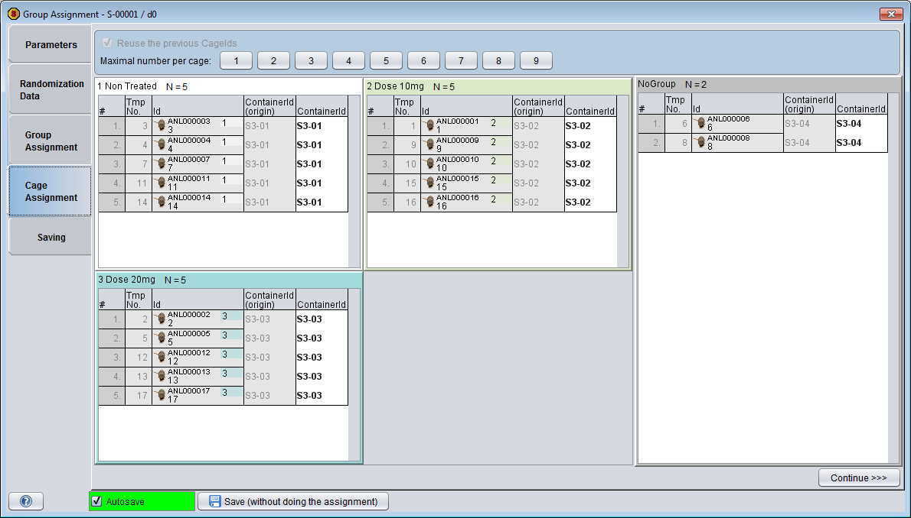 To set cages automatically, click on the maximum number of samples per cages. Spirit will still try to average the number of animals per cages. If you have 12 animals and select a max of 5, Spirit will assign 4 animals in each cage instead of 5,5 and 2.
The checkbox "Reuse previous CageId" is enabled if you have group splitting. In that case, you can decide if you want to reuse the same cages, or reuse new ones.
5. Saving
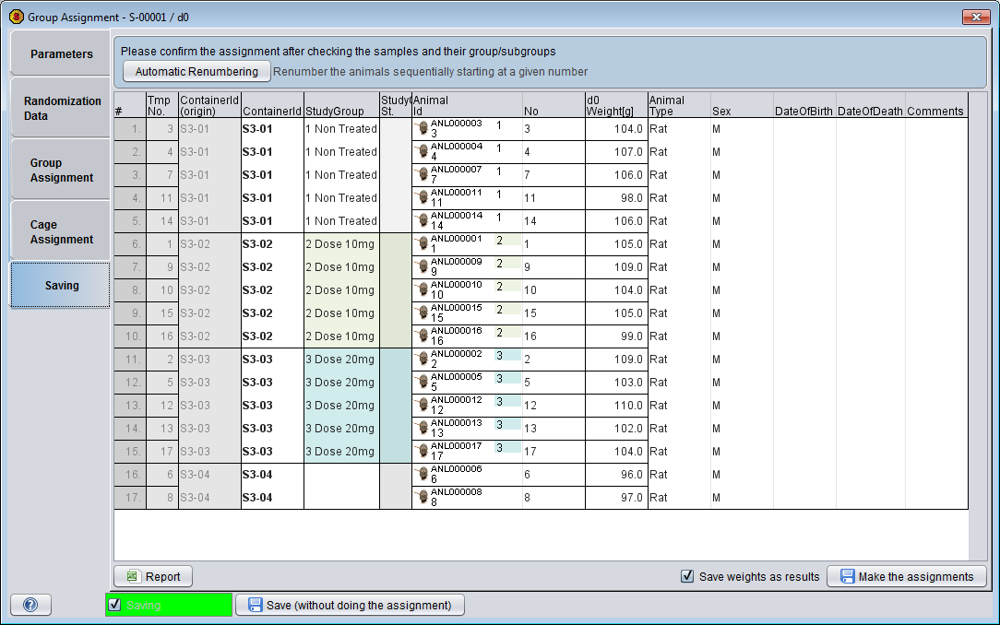 The last step of the wizard is where you review the group assignment, update the subgroups, renumber, enter the metadata, comments. If everything is fine, click the "Make the assignments" button to update the database to match this randomization. The "automatic renumbering" button is used to renumber the samples sequentially as displayed in this table.
Manual Assigment
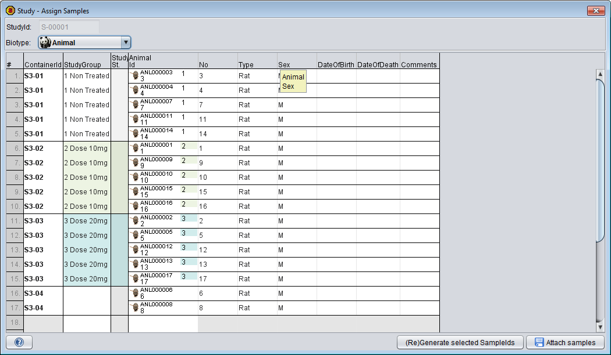 In this dialog, you can directly type or copy/paste the samples with their group assignment. At any time, you can open the dialog to change the groups/subgroups, attach a new sample, or detach a sample from the study.
Monitoring
Live Monitoring
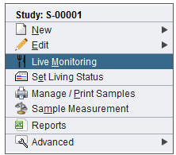 Right-click on a study and select "Live Monitoring", to monitor the actions to be done on each attached sample of the study.
Overview
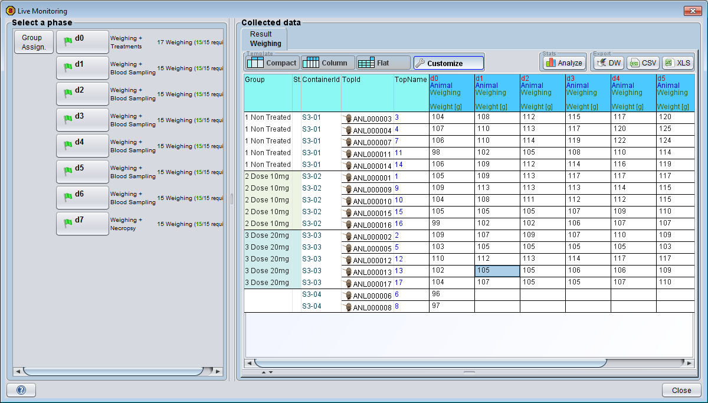 The left pane of the overview dialog shows all the actions to be performed on the attached samples: group assignment, weighing, treatments as defined in the study design.
For each phase, there is a summary of what has been done and what needs to be done. A green flag means all the actions have been done. Click on the "group assignment" to go to the "automatic assignment" dialog, click on the phase button to go to the "Live Monitoring" dialog. Even if there are no programmed action for the measured day, you can click on the phase button and enter some measurements.
If a starting date has been entered for the study, the date is shown and the current day is highlighted.
On the right side of the dialog, the tables show the historic results:
- Results: Weighings: shows the weighing results with the percentage increase since d0 (or the closest of d0 if there is no d0).
- Results: Observations: shows the observations.
- Results: Food and Water: shows the food and water intake with the percentage increase since d0. Since we cannot distinguish the food and water by animals but only per cage, the results are the same for all animal in the same cage.
- Manip: Treatment: To view all given treatments .
Live Measurements
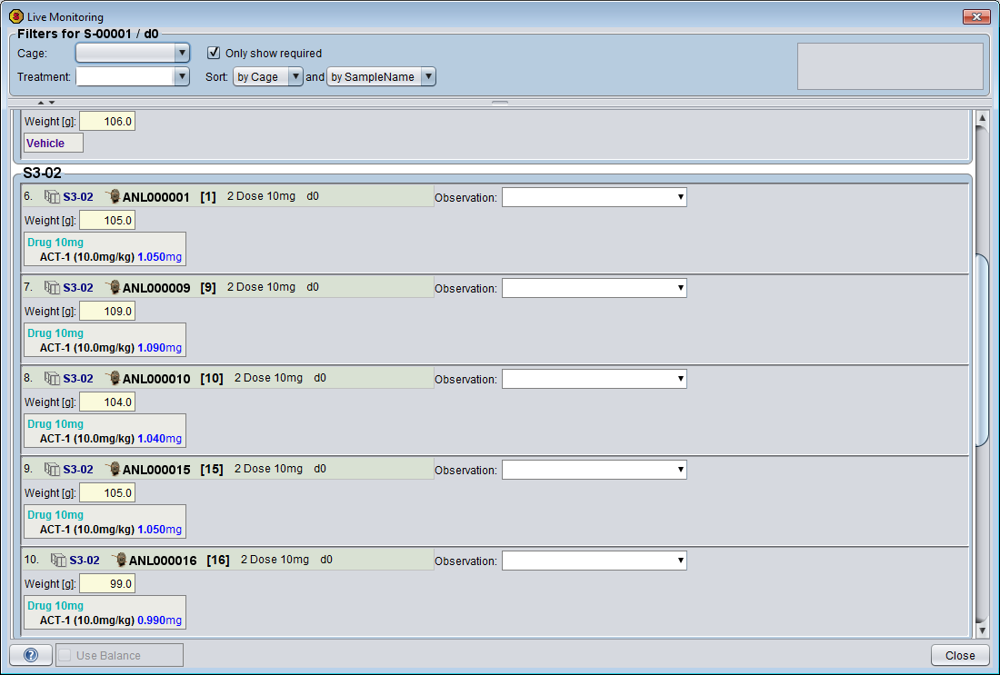 After clicking a phase, the Live Monitoring dialogs shows up. Spirit shows the required measurements specified in the study design, by default.
There are no "Save" button in this dialog because the data is saved just after being entered, with the exact time. By saving the data on the fly, Spirit avoids any possible errors due to network errors or human errors (such as closing the dialog without saving).
All yellow fields are required and automatically get the focus of the user. After entering each value, a popup dialog will show up to inform the experimenter about the treatment to be given, together with the calculated dose. For documentation purpose, the experimenter can also enter the formulation. Next to each value, Spirit displays the last measured value, and the percentage increase.
By hovering the mouse cursor over a field, it is possible to view when the experimenter entered the last value. To enter a new value, click on the field and confirm you want to enter a new value.
If the user is among the blind-details users, he will not be able to visualize the group description and the compounds, but only the group abbreviation and the treatment's name.
If the user is among the blind-all users, he will not be able to visualize anything related to the group or the treatment. The users that are fully blinded cannot see if the specimen belongs to a group or not, nor if the specimen have to be treated ot not.
Replace / Set Living Status
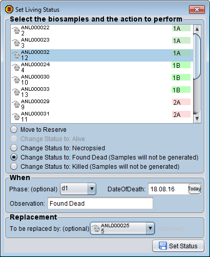 The "Replace / Set Living Status" is a convenient dialog to set the status of an attached biosample and/or to replace it by an other sample from the reserve.
-
- Move To Reserve: this function will remove the group assignment at the given phase.
- Change Status to Alive: You can use this function, to cancel a previous change of status.
- Change Status to Necropsied: This will update the date of death, and mark the animal as necropsied. This step is not required when the planned date of death is already in the study design (ie. when there is sampling template marked as necropsy)
- Change Status to Found Dead: You can use this function, to mark the animal as Found Dead. All samples already generated at the expected necropsy's phase are moved to the indicated phase.
- Change Status to Killed: You can use this function, to mark the animal as Killed. All samples already generated at the expected necropsy's phase are moved to the indicated phase.
- When
- Phase: enter a phase to remove all generated samples after this phase (the samples marked at the necropsy are always kept).
- DateOfDeatch: to update the metadata called "DateOfDeath"
- Observation: to add some comments to the biosample.
- Replacement
- You can replace a sample by an other from the reserve, provided you have some samples attached to study, that are not attached to a group.
Manage / Print Samples
Sample Synchronization
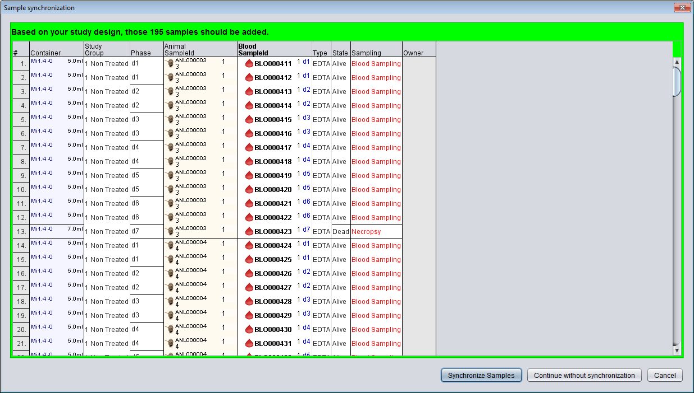
When you select the "Manage / Print Samples" option, Spirit checks that all the samples have been created (as defined in the study's sampling template). The first time you call this option, or if the sampling's template have been modifier, Spirit shows you this dialog and asks you to synchronize the samples to match the study's design. Please check and confirm by clicking "Synchronize".
This automatic creation can be disabled, if you uncheck the box "Generate Samples automatically" in the study design.
Manage Samples
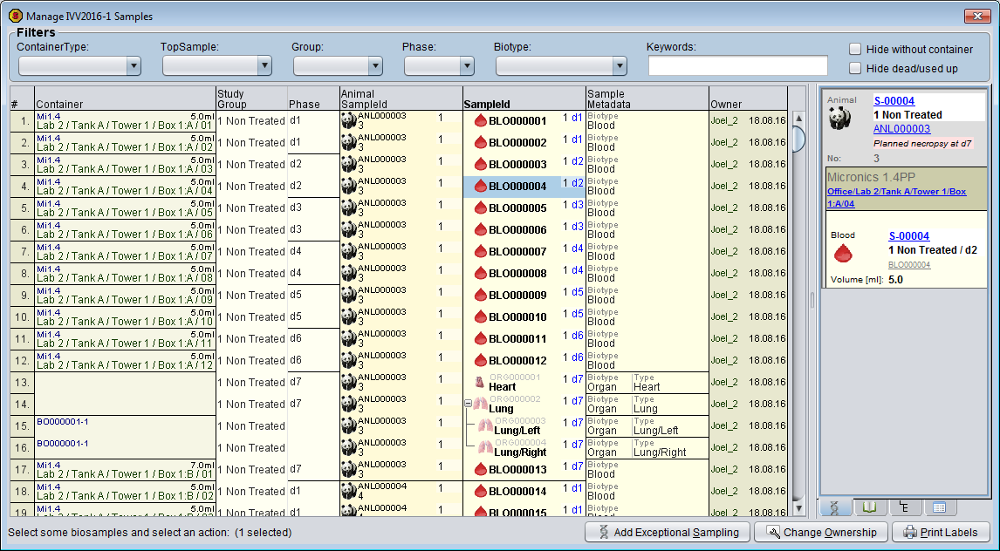 This dialog shows the generated samples from the study, which you can filter by container's type, group, phase, biotype, or some keywords.
Change Ownership
If you want to give the samples to a specific user, you can change the ownership of the samples. By default, the samples are owned by the user who created/generated them and they are editable by all the administrators of the study. By using this option, you can assign the samples to any user, who may not have rights otherwise.
To change the ownership, select the samples, click "Change Ownership" and enter the username of the new owner.
Print Labels
 To print the labels, you first select the samples to print in the "Managing Samples" dialog, and then click "print labels".
For each type of container, the printing view shows the list of containers, and a preview of the label. The preview is rendered directly from the printers based on the entered settings (printer, media, left or right labels).
To print the labels, you first select the samples to print in the "Managing Samples" dialog, and then click "print labels".
For each type of container, the printing view shows the list of containers, and a preview of the label. The preview is rendered directly from the printers based on the entered settings (printer, media, left or right labels).
Sample Measurement
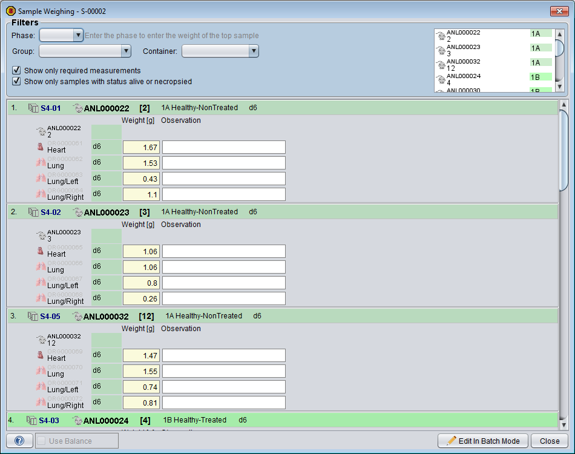 Right-clicking on the study and select "Sample Measurement" to perform the weighing or the other measurement on the generated samples, as defined in the study's sampling templates
The experimenter can select some filter to view only the samples generated at a given phase, from a given group or he can also uncheck the "Show only samples with required measurements" to view all samples, including those without required measurements.
Each entered value is automatically saved to the database. If there a network error, the experimenter is immediately informed. Once values are entered, you can hover the mouse on the values to view who entered it and when. To enter a new value, you will be prompted for a confirmation. It is also possible to edit the samples in batch-mode and copy/paste from an Excel sheet.
Advanced
Delete Study
To be allowed to delete a study, the user need to be an administ or the creator of the study.
If the study is deleted, it is still possible to restore through the Last Changes from the audit trail.
Change Ownership
The owner of the study is also the creator of the study. To change it, open the study popup menu and select "Advanced"->"Change Ownership"
Study History
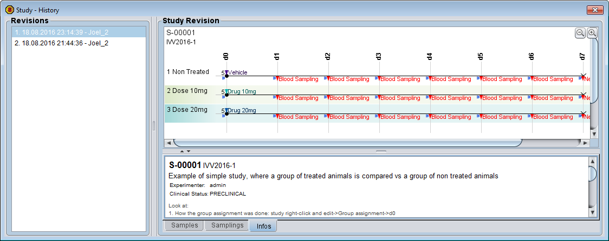
Spirit contains an audit trail of all entities, including studies. To view the history of a study, open the study popup menu and select "Advanced"->"View Change History"
Biosample
The Biosample Tab shows the biosample centric view of Spirit, which should be used to query/edit biosamples
Visualization
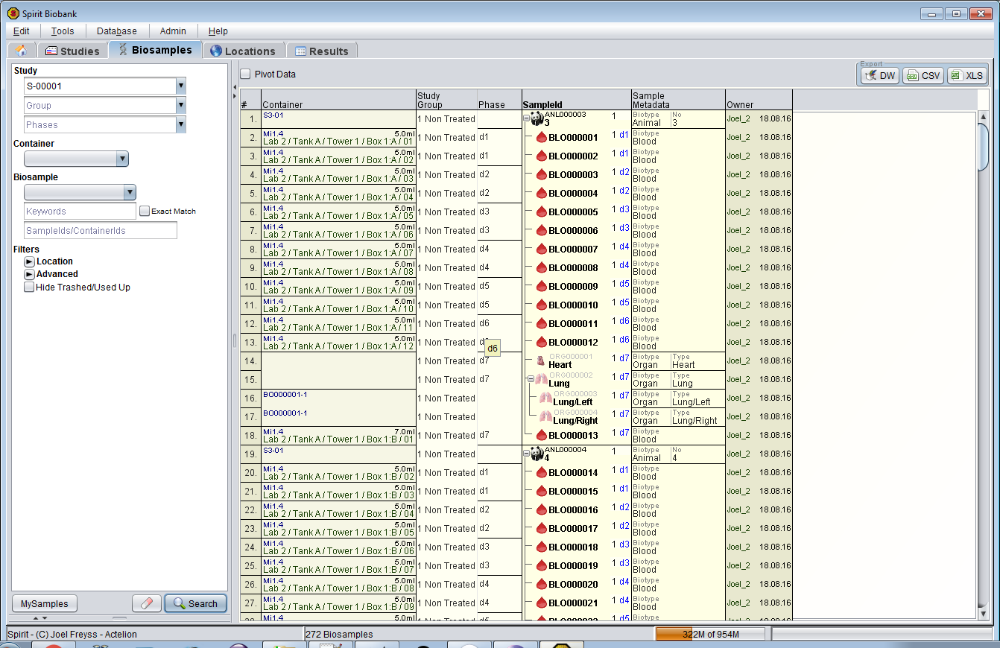 Once you click the Biosample Tab on Spirit, you get the biosample centric view of Spirit, with the search panel at the top-left, the detail panel at the bottom-left and the biosample table at the center.
Search Panel
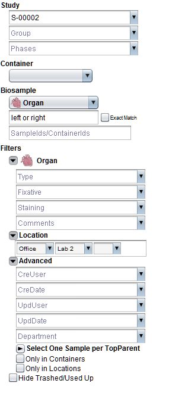 In this search pane, enter the filters for making the search:
- StudyId:
- if a studyId is given, the filters for the groups and phases are automatically shown. It is possible to enter more than one studyId by separating them with spaces, or by selecting them in the popup menu with ctrl-click.
- Container:
- This popup contains the available container types available in the system, or used in the selected study.
- Biosample:
- Biotype: select one of the available biotype used in the selected study. If you select a biotype, the filters for each of the possible metadata are shown.
- Keywords: The keywords search will query all the related attributes of the biosample (metadata, comments, location, user, group, phase), and the attributes of all the parent biosamples.
Spirit's seach is case insensitive and ignores the special characters (.-_/:#), so that searching "Anti12" will also return the samples containing "anti#1_2"
Complex queries with and/or/()/*/"" are possibles. You can click on "Exact Match" to disable the complex query behaviour and find the samples containing exactly what is entered.
Examples:
The query Rat Dry Eyes will return the biosamples having the metadata "Rat" (on the parent animal), "Dry" and "Eyes" (on the organ).
The query Eyes (left or right) Box1 will return all left or right eyes located in a location called Box1
The query "Left Lung" will return the samples where one of the field is exactly "Left Lung".
The query Ey* will return the biosamples having a field starting with Ey. - SampleIds/ContainerIds: will return the samples matching exactly the containers. It is possible to enter several ids separated by spaces.
- Biosample:
- Filters
- Biotype: shows the specific filters for the selected biotype. You can query any of the metadata, prefiltered with the possible values.
- Location: to filter the biosamples under this location and all its children location.
- Advanced: to filter based on the user, date of creation/update, the department owned by the biosample or:
- Select one sample per topParent: This is a useful feature if you want to retrieve one sample per human/animal based on some simple criteria
- Only in Containers:to return only the samples with a defined containerType
- Only in Location:to return only the samples with a defined location
- Hide trashed/used up: to return only the available samples
Biosample Table
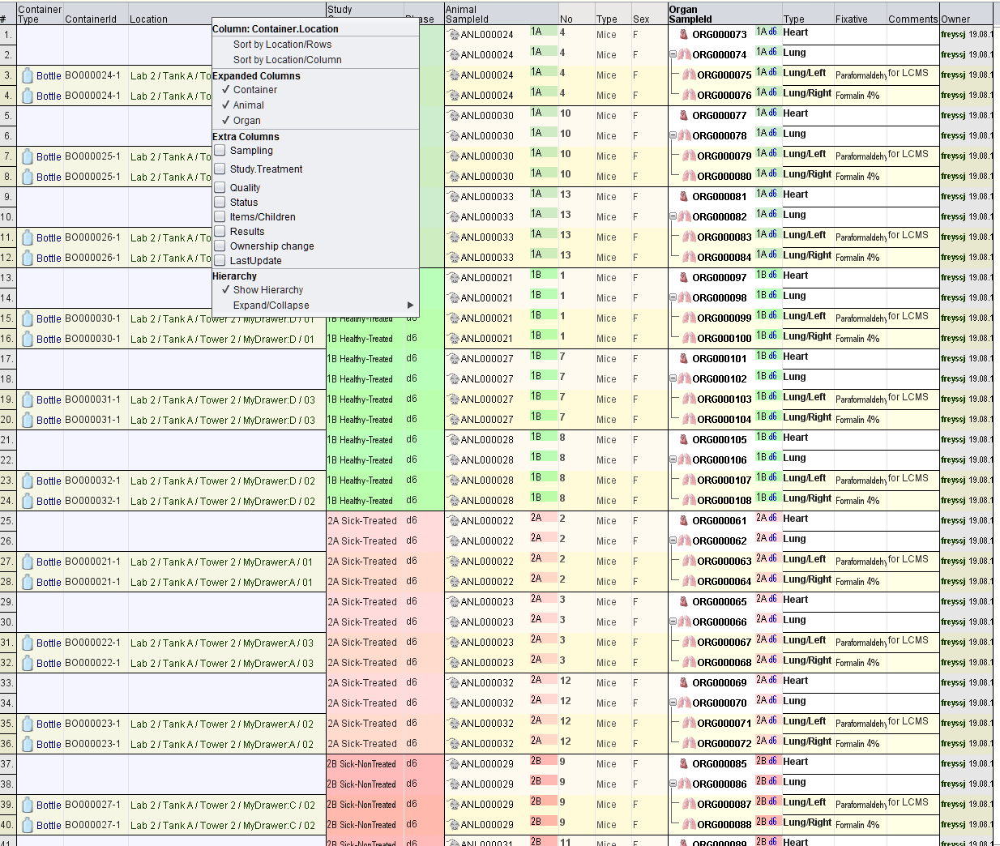
The biosample table shows the list of biosamples matching your criteria. It is dynamically rendered according to your criteria, and the width of each column is resized to fit the data into the screen as much as possible. Smaller monitors may lead to data displayed on 2 rows or to truncated data.
The columns displayed are:
- Container
- The container information (containerType, containerId, Amount, Location) is shown either in 1 combined or in 4 separated columns. You can switch between the "1 column" and the "4 columns" views by either double clicking on the header, or by right-clicking the header and selecting "Container" under "Expanded Columns".
- Study
- The studyId, group and phase are displayed. The StudyId is only shown if biosamples come from different studies.
- TopId
- This column is shown only if the biosamples have a parent (not shown on the table). The topId shows the sampleId and sampleName of the top biosample in the hierarchy, together with the group's abbreviation. You can expand the column to view the related metadata by double-clicking on the headr.
- Parent
- This column is shown only if the biosamples have a parent, which is different from the topId. This column can also be expanded
- SampleId
The Sample identifier (sampleId, SampleName) is shown either in 1 or 2 columns. You can switch between the "1 column" and the "2 columns" by double clicking on the header or by expanding the column on the header popup. The group of the sample and its phase is also shown for a quick overview
If the sample has some children, a [+] sign is displayed next to the sampleId. You can double-click to show/hide the children. The same can be done from the header popup menu, by clicking the appropriate option under "Hierarchy"
- Metadata
- The metadata are shown either in one unstructed column (if the table contains biosamples from different biotypes) or in multiple columns, showing each metadata. By default, only the main metadata are displayed (as configured in the biotype administration), but it is possible to add other columns by opening the header popup menu. The columns to be added are the following:
- Quality:The quality is normally shown on the sampleId by setting a red (bad quality) to green (good quality) background on the id of this column (if any).
For exporting and sorting purpose it is possible to add the Quality column. - Status:The quality is shown on the sampleId by setting a specific background on the icon of column.
- Items/Children:This option counts the number of children per biosample.
Those biosamples are then counted by biotype/location. This is useful to check the number of available blood/organs per animals. - Results:This option counts or display the results linked to the biosamples.
If there is one result available, the value of this result is displayed. Otherwise, the table displays the number of tests and results per biosample. - Ownership Change:This option shows if the biosample had a change of ownership, and to whom it was given.
- Quality:The quality is normally shown on the sampleId by setting a red (bad quality) to green (good quality) background on the id of this column (if any).
- Owner:
This column shown the date of creation, the user who created the sample and the owned department (if any). The user who created the sample is defined as the owner.
Sorting is possible by clicking on the table's header (depending of the selected column, you can select the type of sorting: position by row or by columns). The first sort is done in ascending order, and the second in descending order. If you need to sort on multiple columns (group, phase), you should first sort on the phase and then on the group.
The sort algorithm is case insensitive and numbers are compared as numbers when they are not mixed with the text. ie. "Box 2" comes before "Box 10", but "Box2Top" comes after "Box10Top"
Detail Panel
The detail panel shows the detailled information related to the selected biosample.
This tab show the details related to the selected biosample and its parents. If some metadata were hidden from the biosample table, those would be shown here. Click on the study/location/attached files to open those links.
This view shows the importand actions related to the biosample: sample creation, container change, treatment.
To view the hierarchy of the biosample, ie. all parents and children.
To view the results.
Pivot Biosamples
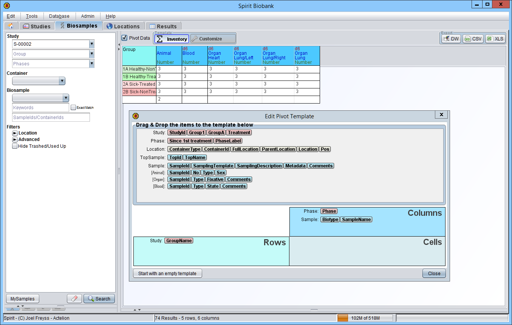 An alternative visualization is to pivot the biosample table, to count the number of biosamples based on some criteria. The attached figure shows the number of samples, where the group is shown on the rows, and the phase, biotypes are shown on the columns.
To open this view, click on "Pivot Data". Upon checking this box, Spirit displays the number of biosamples currently in your table and a new dialog opens to configure the information to be shown. In this dialog, you can then drag and drop those items at the rows/columns/cells level to start counting the biosamples based on those criteria.
Use this function to count the number of organs per animal, to count the types of plasma samples taken at different timepoint per group in a study, or to count the number of animals used per year from each provider.
Exporting Data
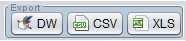 On the top-right of the biosample table, you can see the three exporting options:
- DataWarrior
- DataWarrior is an open source visualization and analysis program, developed at Actelion and integrated in Spirit.
- CSV
- This option will export your table to a Comma Separated Value file, and open it with the software linked to the csv extension. This option is the best if you don't want any formatting, or if you don't have a program like Excel or Open Office, which can open the xlsx files.
- Excel
- This option will export the same table as for the csv option, with some formatting.
Editing
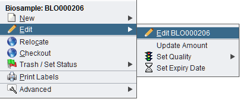 To edit, select the biosamples to be edited, right-click to open the biosample popup menu and select the Edit option.
Editing is only enabled if you have sufficient rights (the biosample's owner is shown in green in that case). To have sufficient rights, you must be either one of the study's admin or experimenters if the sample belongs to a study, be in the same department if the sample has no study or be the owner of the sample.
Batch Editing
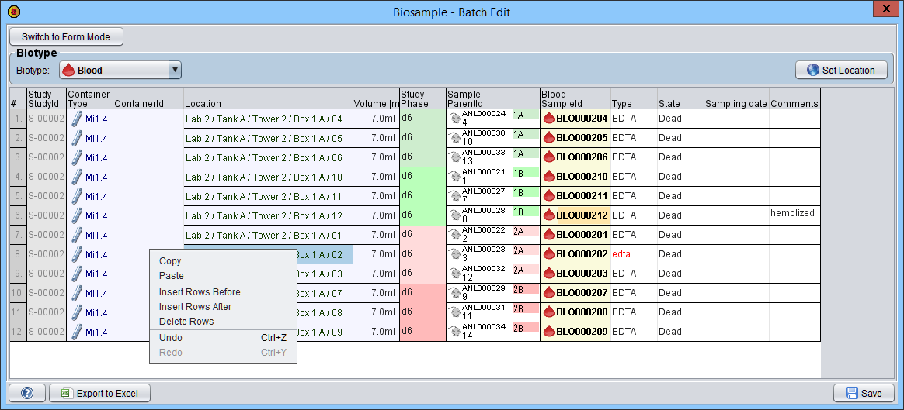
In batch editing, editing works like any spreadsheet (Excel). You can copy/paste from the clipboard, undo/redo your last actions. The columns to be edited are similar to the ones described in the biosample visualization, at the exception that all columns are expanded to be easily editable.
The "batch editing" is the default dialog for the edition of living/solid/liquid samples, but it is possible to switch to the "Form Editing" if there is only one sample to edit.
- Container
- There are up to 4 columns to edit the container's information, depending of the biotype configuration. The containerId is only editable after entering a containerType. For the location, you can either enter the full path like "Lab2 / Tank A / Tower 2 / Box 1 : A/04", a partial path like "Tower 2 / Box 1 : A/04", or browse the location by clicking the "Set" button. The user needs to have write access on the location. The amount column is displayed only if the biotype is set to have an amount. Those columns can be condensed in one column by double clicking the header (as shown in the biosample visualization)
- Study
- There are up to 3 columns to edit the study's information. Those columns are shown by default for the living/solid/liquid samples, but they can be added manually (right click on the header's table to hide/show those columns if needed). The studyId/group can only be edited for the samples, whose parents are not in a study. The phase can only be edited if the parent does not have a phase. The studyId/group/phase is always inherited from the parent, and therefore cannot be changed if breaking this rule.
- ParentId
- In this column you can enter the parent of the sampleId. You need to have read access on the parent sample.
- SampleId
- You can keep the sampleId empty as it will be automatically generated, if you don't enter it.
- Metadata
- The metadata columns depends of the biotype. Each column may show a different editor (alphanumerical, numerical, autocompletion, list, multi-list, file, link to an other sample) based on the biotype's configuration. A yellow background shows the mandatory fields. If the biosamples in the table have more than one biotype, there will be just one editable column with all the metadata, but copy/paste won't work.
To add more rows, you can simply go down with the arrow key and new rows will automatically created.
You can also right-click on the table, select "Insert Rows" and the number of rows you wamt to insert.
It is important to know, that deleting a row from the table will not delete the sample but actually remove this biosample from the editing. If you right-click on the column, you can also sort the columns and add extra columns: ELB, quality, last update.
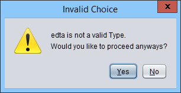
Validation is done when you click the button "Save".
A red color shows erroneous fields (unknown value for a list metadata or text for a numerical value) and will give the "invalid choice" error upon saving.
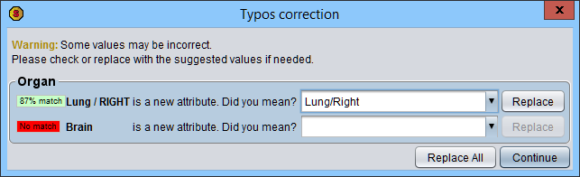
An orange color shows a warning (new entered value for an autocompletion metadata) and will lead to the "typo correction" dialog upon saving. In this dialog, each new value is checked and compared to the existing ones to suggest a replacement. In the next example: "Lung / RIGHT" should be replaced by "Lung/Right" and "Brain" is a new value with no suggestion. Click "Replace All" to accept the suggestions and leave keep the new values.
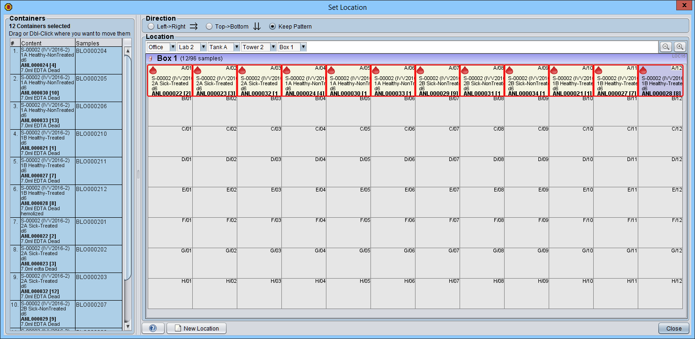 The Set Location button allows the user to set the location for all the samples in a visual way, as described in the Location section. Select the samples and click or drag them to their new positions.
It is possible at
Form Editing
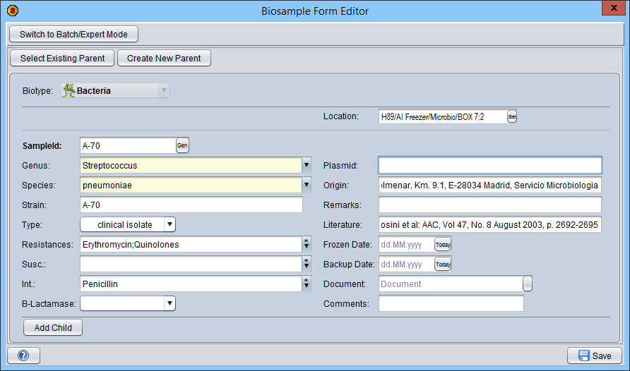 The "Form Editing" shows an expanded view of the sample to edit. It is the default editing mode for components (bacteria, cell line, antibody), due to the higher number of metadata for these biotypes. To switch to the "Batch Mode", click on the Switch button.
The edition in this view is very similar to the "Batch mode" and the same type validation applies here.
Add children/aliquots
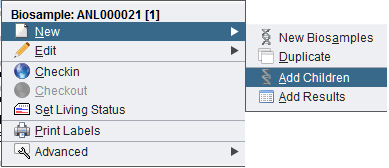 To create children (aliquots) of biosamples, query and select the parent biosamples and then right-click on them to select the "Add Children" menu in the "New" section of the popup menu
Use this option if the children you want to create have all the same biotype.
Use this option if the children you want to create have different biotypes or if you want to reuse a previous template. You can choose any template from a study where you have read access, or any custom you created here.
When you click the "Create Aliquots" button, you will be redirected to a new dialog to let you edit the biosamples in batch mode.
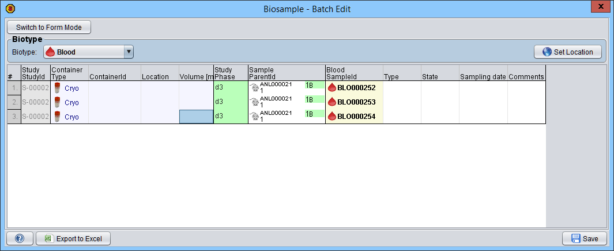
Add results
To add results to one or more biosamples, you can select them and select the option "New" and "Add Results" from the popup menu. Read more about this in the Result section
Set Status
The status is a flag added to the sample. The status are the following:
- Available: default
- Low Volume:
- Used Up:
- Trashed: If you trash a biosample, it is automatically checked out from its current location.
The status of the biosample can be seen visually by inspecting the sampleId. A different background on the icon is shown for each status. Yellow for low volume, pink for used up, and red for trashed.
The status change can be seen in the biosample detail or in the audit trail of the sample.
Set Quality
The quality can be changed in a similar way to Bogus, Questionable, Valid (default), Confirmed.
If you set a biosample to bogus or questionable, the system will ask you to change the quality of all linked results
 The quality is shown on the sampleId. Red, orange, transparent, green are respectively used for Bogus, Questionable, Valid, Confirmed.
The quality is shown on the sampleId. Red, orange, transparent, green are respectively used for Bogus, Questionable, Valid, Confirmed.
Set Expiry Date
You can add an expiry date to a set of samples. Samples with an expiry date will be displayed in the biosample table and the biosample detail.
To retrieve the list of expired biosamples and the list of biosamples that are going to expire. You can go to the Menu and select "Tools->Query Expired Samples". You can right-click on the samples to perform any needed operations
Checkin / Checkout
To change the location of biosample, select them and open the "biosample popup menu" using right-click:
- Checkin is giving a new location to a biosample and Relocate is moving the sample to a new location
- Checkout is removing the location
Checkin
The selected biosamples are shown on the left panel of the checkin/relocate dialog. The destination location is shown on the right side. To enter a location, you can either type it by clicking on the location field and entering "Tower 2 / Box 1" or browse to the desired location.
To set the samples to the desired location you can:
- Drag them and move them to the new location. It is possible to change the location of any biosample in the box (provided you have the rights). To move several samples, use ctrl-click or shift-click to select several biosamples before dragging them
- Double-Click on the new position. The first click gives a preview of the new location, while the second click moves the samples. The way that samples are moved depends of the "direction". You can decide to assign the positions from "left to right", from "top to bottom" or to keep the same order/pattern (default) if the samples already has a position..
A new location can also be created directly from this dialog.
Checkout
To checkout biosamples, select them and click "checkout" from the popup menu. Click "Checkout" in the confirmation dialog to remove them from the location.
Advanced
Delete Batch
Delete Batch is used when biosamples should be deleted from the database. Use this function to delete the physical sample as well as the virtual sample. After deletion, the only way to restore it is from the audit trail. Only the owner of the biosample or an admin can delete.
Help Me Select Some Biosamples
This is an advanced feature, to help you select biosamples based on some criteria.
For example, let's say you want to make an experiment using several antibodies on different target, and you want to make sure that each antibody has a fluorophore working on a different wavelength. In this case, you should set the query criteria on the antibody's target and you should set the discriminator to the fluorophore's wavelength. Then after entering each antibody's target, Spirit will give you all the matching antibodies and let you select one antibody per target. After you select an antibody, Spirit will gray out the antibody with the same fluorophore's type (as set in the discriminating criteria).
Change Ownership
It is possible to change the owner/department of a biosample through this function.
Change History
Through the change history, the user can browse the audit trail and see all changes. After clicking on a version, you can still change the tab of the biosample detail pane to visualize its hierarchy, results at this given timepoint. To restore a version, right click on the version and select "Restore"
Location
The location Tab allows you to browse through the locations in the system, to view the organisation of the labs and to preview the content of each box.
Visualization
Search Pane
The location search pane on the top right is where you enter the criteria for finding a location:
- the studyIds to find where samples from a study are stored
- the biotype to find all locations containing samples of this biotypes (ex: Bacteria, Antibodies)
- the name of the location to find all locations with this name
- the Empty/NonEmpty checkboxes are used to find locations without or with biosamples.
Location Table
The location table shows by default the root locations of types building or labs. If you make a query, the table will also display the results from the query. You can expand or collapse the content of the location by double clicking on the "+"/"-" signs.
It is also possible to add some extra information by clicking on the header to display the free space available, the size of each box and the studies linked to each box.
Selection one location will display the location on the location depictor. It is also possible to select several of those locations and right-click on them to open the location popup to perform editing operations.
Location Browser
The location browser is a component you see in many places across the applications and it is used to provide a quick access through the locations.
It works like the explorer file of Windows: you can either click on the comboboxes to select a location or you click on the side and edit the location yourself by copy/paste:
You don't need to enter a full path: "Office/Lab 2/Tank A/Tower 2/Box 2" can be retrieved by typing "Tower 2/Box 2", if this location is not ambiguous
Location Depictor
The location depictor shows the location in a graphical way. The type of display depends of the selected location.
Editing
To edit locations, you can either:
- Select New Location from the edit menu or the location popup menu
- Select existing locations rom the location table and select Duplicate from the popup menu (right-click on locations will open the popup). The hierarchy of the selected samples will be kept. This is useful to copy the layout of a tower or a tank
- Select existing locations, and select "Edit Batch"
Edit Table
The edition of locations is done through this table:
- Parent: The parent container, which is optional.
- Type: the type of the location:
- Building, Lab: are admin locations, that only administrators can create.
- Freezer, Shelf, Drawer, Tank, Tower: are locations that any user can create to organize its lab. They can contain children location.
- Box, Rack, SlideBox, Bag: are location container, which contains biosamples and have a configurable size.
- Name: identifier of the location. The parent/name combination must be unique.
- Labelling: If the location has a configurable size, you can configure the display of the positions: None, A1,A2,...; 1,2 (horizontal); 1,2 (vertical)
- Rows / Cols: If the location has a configurable size, you can also specify the dimensions. Those values are optional, if the labeling is "None"
- Privacy / Department: If you run Spirit in a user-manager environment, you can setup specific rights to each location. Doing so, you can restrict the organisation of a lab to a specific department.
- Inherited: the default, same privacy as the parent location
- Public: the biosample's location is readable by everybody, provided you have read access on the sample.
- Protected: the biosample's location is shown as hidden to users who are not member of the specified department. This is recommended visibility for the organization of the labs.
- Private: the content of the location is completely restricted to the specified department. Biosamples inside this location are not visible/searchable to those outside the department, even if they should have access to the study/biosamples. This is the recommended visibility for backups storages.
- Description: The description is shown next to the name, and printed on the location's label
To print the label of a location, right click on them and select "Print"
Advanced
Delete Batch
To delete a location, you must have edit rights on the location (if the location is public or if you are a member of the assigned group) and you must have edit rights on all the samples inside the location.
If the location is not empty, Spirit will not delete the samples. A dialog will popup to ask you what to do with the samples: "Mark as Trashed" or "Mark as Used Up".
View Change History
All changes on the location (checking/checkout of biosamples, editing the location) is recorded. To see the changes, click on the "Advanced" > "View Change History".
Relocate / Checkout samples
You can select biosamples directly from the biosample table or from the graphical view of the location. Right-clicking will then open the biosample popup menu, from which you can update the location. This feature was already explained in the Biosample section
Results
On the result's tab of Spirit, the results become the main focus of your work. There you can query, manipulate and export your data how you like. The left side of the screen is used to enter the query, and the right side is used to display and manipulate the results.
Visualization
Search Pane
Complex queries are possible through the keywords search. The following operators are possible AND, OR, (, ), * and ".
Examples:
- Healthy: to query results on biosamples on groups containing Healthy
- Lung: to query results on biosamples on lung, lungs/left, lung/right
- Mesoscale Fluid IL-15: to query Mesoscale results on Fluid with the IL-15 analyte. AND is used as the default operator
- Plasma France: to query results linked to plasma from patients in France.
- Mesoscale (Organ or Fluid): to query Mesoscale results done on organs or fluid.. You can combine () and OR operators
- "Lung": to query results on biosamples on lung. Quotes are used for exact matches.
The keywords searches all the related fields of the result: study, group, phase, topId, topName, topMetadata, parentId, parentName, parentMetadata, sampleId, sampleName, sampleMetadata, sampleBiotype, test, testInput, comments, user, electronic lab notebook, ...
The search is case-incensitive and ignore the special characters (.;/_-,#), so that searches on "IL15" will find all result on "IL 15", "IL-15", ...
Result Table
After clicking search, the retrieved results are displayed on the result table. There are many ways to present the results and the biosample information linked to those results. Select a predefined template on top to choose between these views:
If the results are heterogeneous (several tests, done on different biotypes and different analytes), this template displays the different conditions of the test in each cell. In that case, exporting to Excel is troublesome
If the results are homogeneous (one test on different analytes), this template is similar to the Column template and the analytes are displayed at the columns level.
 The Flat template shows one datapoint per row.
The Flat template shows one datapoint per row.
Customize
To add more information on the result table or to display this information differently, click on the Customize button to open the customization dialog.
In this dialog, you can see all available items. Each is a (non-empty) piece of information linked to the result. Items like the "Location", "Animal Sex", "Plasma State" can be added to the display by dragging them with the mouse to the "Rows", "Columns" or "Cells" level. Changes to the template are shown in real time.
In this example, we display for each Group ("GroupName", "Animal.Type", "Animal.Sex", "ELB" displayed as Row) and for each test's condition ("TestName", "Input" displayed as Columns), the average of the values, the coefficient of variation and the number of values, used for the calculation.
Result Detail
To have more information on a calculation, click on the cell to view each datapoints linked to this calculation. One of the possible use of this function, is to find outliers within a group. Displaying the coeff. of variation immediately shows if the values within a group are comparable or not, and looking at the individual datapoints points out to the possible outlier.
Export to DataWarrior / Excel / CSV
Simply click Excel to export your data to Excel (xslx format), or click CSV to export it in the csv format.
DataWarrior is an other open-source program, which works with Spirit. It can be downloaded at http://www.openmolecules.org/datawarrior/. After the installation, you will be able to open the dwar files created by Spirit. Please read the documentation to learn more about this tool.
Export will export the table, as displayed to the appropriate program.
Analysis
To get an automated analysis of your data, click the Analyze button after querying your results.
 Each test condition (test, biotype and input) is analyzed. For each condition, Spirit calculates:
Each test condition (test, biotype and input) is analyzed. For each condition, Spirit calculates:
- the number of groups
- the number of values
- the distribution: from the distribution displayed in the histogram, Spirit assess the type of distribution: "Normal", "Log Normal" or "Uniform". A log-normal distribution will be displayed using a logarithmic scale.
- the Kruskal-Wallis (KW) value: The KW value shows how significant our test is. The lower this value is, the more significant the test is to differentiate two groups from our dataset.
The different conditions are sorted by the KW value. A green background is shown when the groups are well differentiated (KW<0.05) and a red background is used when groups cannot be differentiated (KW>0.2)
Export to DataWarrior
From the analysis dialog, click on "All" or "KW<0.01" to export your data to DataWarrior for a quick visualization.
Based on the nature of the data, Spirit will either display:
- a Line Chart: when results are phase dependant (ex: weight increase)
- a BoxPlot: when results are not phase dependant (ex: weight of an organ)

{kind=link}
{kind=link}
{kind=link}
{kind=link}
{kind=link}
{kind=link}
{kind=link}
{kind=link}
{kind=link}
{kind=link}
{kind=link}
{kind=link}
{kind=link}
{kind=link}
{kind=link}
{kind=link}
{kind=link}
{kind=link}
{kind=link}
{kind=link}
{kind=link}
{kind=link}
{kind=link}
{kind=link}
{kind=link}
{kind=link}
{kind=link}
{kind=link}
{kind=link}
{kind=link}
{kind=link}
{kind=link}
{kind=link}
{kind=link}
{kind=link}
{kind=link}
{kind=link}
{kind=link}
{kind=link}
{kind=link}
{kind=link}
{kind=link}
{kind=link}
{kind=link}
{kind=link}
{kind=link}
{kind=link}
{kind=link}
{kind=link}
{kind=link}
{kind=link}
{kind=link}
{kind=link}
{kind=link}
{kind=link}
{kind=link}
{kind=link}
{kind=link}
{kind=link}
{kind=link}
{kind=link}
{kind=link}
{kind=link}
{kind=link}
{kind=link}
{kind=link}
{kind=link}
{kind=link}
{kind=link}
{kind=link}
{kind=link}
{kind=link}
{kind=link}
{kind=link}
{kind=link}
{kind=link}
{kind=link}
{kind=link}
{kind=link}
{kind=link}
{kind=link}
{kind=link}
{kind=link}
{kind=link}
{kind=link}
Principal Component Analysis
You can export your data from Spirit to DataWarrior and perform a Principal Component Analysis (PCA). PCA are great to reduce the dimensions of your data and do a projection on 2 or 3 axis.
- After retrieving the results, click the "Analyse" button.
- In a PCA, it is important to have a full dataset without any missing datapoints. For this purpose, the Analyze dialog highlights the biggest dataset that could be used to perform a PCA (columns in blue). To export those in DataWarrior, just click the link "PCA".
- In DataWarrior, select Data->Add Principal Components: select 2 or 3 components to be calculated and select the columns on which you want to calculate the PCA
{kind=link}
Self Organizing Map
The procedure for a Self Organizing Map (SOM) is very similar to the PCA, except that in DataWarrior, you must select Data->Self Organizing Map->Apply
{kind=link}
Editing
To create/edit a new experiment you can:
{kind=link}
- Go to the menu and select "Edit -> New Results". There you will asked to enter your Electronic Lab Biological (ELB) number to define the results of your experience. The ELB defines a set of results made in one experiment and must be unique.
- Go to "Edit -> New Results", and enter an existing ELB. The experiment will then be loaded and you will be able to add / update / delete results.
- Right-click on some results, and select the option Edit -> Edit ELB.
- Right-click on some results and select Edit -> Edit Selected Results. This is recommended way to edit results, knowing that you cannot add or delete results in this approach
If you selected the option "New Results" from the Spirit menu, you will be prompted to enter an Biological Electronic Lab Journal number (ELB).
{kind=link}
{kind=link}
- Tests
- An ELB can contain results from different tests, each test being shown in its own tab. To add an other test, click on the "+" tab. To remove the test, click the "X" of the tab.
- Result Table
- The SampleId is required for each result and it is sufficient to link the result to the topId (animal/human), to the study and its group.
- The phase is optional and can only be entered if the sample is not already associated to a phase.
- The attributes depends of the test. For the LCMS, the analyte and the concentration are mandatory. A unit can be specified by putting into braces or brackets. ie write "IL-4 [nM]" instead of "IL-4"
- The comments
- If you right-click on the headers, it is also possible to add the ELB, the quality.
- Pivot
- When importing data from an other tool, the data format may differ from the format of the result table. Spirit gives the possibility to pivot the data based on the phase (ex: weight increase) or based on the test's input (ex: LCMS). T
{kind=link}
{kind=link}
Advanced
Delete Selected Results
Only the owner (or an admin) can delete results. To delete results, right-click on those results and select "Advanced -> Delete Selected Results" from the popup menu.
Change Ownership
In the same way, you can assign the results to someone else by right-clicking on those and selecting "Advanced -> Change Ownership"
Change History
The option is used to changes to the seected result.
Advanced
Import/Export
Export
It is possible to export Spirit data using the Spirit File Format. The Spirit File Format is a proprietary format which encapsulates the studies, biosamples, locations, results, biotypes and tests of the data you want to export. It is self-contained, meaning that the data exported contains everything to rebuild the exported data somewhere else (ie, if you export results, all the linked biosamples, biotypes and tests will also be exported). The file is a JSON text readable format (human readable), and it could actually by manipulated by the user or an other program.
To Export data, go to the "Edit" menu of Spirit and select "Export Data". In this dialog, you must decide what you want to export:
{kind=link}
- Export data from the current view: with this option, you can make a query in any of the Spirit perspective and Spirit will export only the data needed to reconstruct the result of your query.
- Export data from the following studies:You can type the studyIds to export the study design, as well as all the associated biosamples (and their types), location, results (and their tests)
- Export all biotypes/tests:This is to export the definition of your biotypes/tests
- Export everything:This option is only possible if you have less than 10 studies, as the file may be potentially too big to export more data.
Import
To import a Spirit file, go to the "Edit" menu of Spirit and select "Import Data". Select a file to open the "Import Data" dialog.
The "Import Data" dialog gives you different options to import the data, in case of conflict.
{kind=link}
The "Admin" menu in Spirit is only accessible by an administrator.
{kind=link}
Database Settings
Go to the "Menu" > "Database Setting" to change the database configuration. This dialog is only visible if Spirit is started without any specific Database Adapter.
Database Connection
In this dialog, you can configure how Spirit connects to the database. There are 3 available configurations:
{kind=link}
- HSQL Local database for 1 user
- This is default configuration. With this configuration, Spirit can be tested without any other installation any other user settings. Spirit runs without any user management, and the logged in user is the administrator of the system. The HSQL database is file based, and you can specify or change the file to create/reuse an old database.
- HSQL Server database
- You can use this configuration to run Spirit in a multi-user environment. User accounts will need to be created.
- Mode:Server/Client. You need to setup one computer as server, and this server must always be running for the client to connect to it
- Path (server only): directory where the HSQL database should store the file (files are only stored on the server)
- Server (client only): IP address or computer name of the server to connect to
- Production database
- To work with productive data, you need to install a database server with proper administration and backup. Spirit works with MySQL and Oracle
- Vendor: MySQL / Oracle
- Connection URL: path to the database server, which is a URL like jdbc:mysql://server:3306/spirit or jdbc:oracle:thin:@server:1521:test
- UserId: the user to be used to connect to the database (spirit if you created the user through "create user spirit identified by 'PASSWORD')
- Password: You can type the Spirit encrypted password given by an administrator or you type the "..." to encrypt the connection password given to the UserId
The 3 buttons below are used to initialize the database:
- Test Connection: to test if the user/password/dbUrl are correct. It is not possible to save if this not correct
- Test Schema: to test if the tables of the spirit schema are well created. If unsuccessfull, Spirit will propose you to update those tables to match the expected schema. The update has to be done with care, please ensure the DB is well backed up before.
- Recreate Examples: to delete the existing examples and recreate them, if the user modified them.
User Settings
The user settings are stored on the database and are therefore shared by all users conencting to the system. Hover your mouse on the question mark to have an explanation of each configuration item.
{kind=link}
The available settings are:
- Last changes: the Home Tab shows the changes from the last N days. Use this setting to change it
- Roles: Enter a list of possible roles, that the user may have. Ex: FacilityManager, QA.
- Login with one specific role: By default, each user is logged with all its role. if this box is checked, the user needs to select its role (it becomes impossible to be an admin and a normal user at the same time)
- Are user-rights role based only: By default, the rights depends of the department. If this box is checked, the department is ignored and only the roles are used.
- Data separation: by default, Spirit under an "open" environment where all study designs are "viewable" and where all samples outside studies is readable by everybody. It is however possible to restrict it per department by selecting "restricted": ie. only the biosamples created by the department of the logged in user are readable
Study Settings
The study settings define the metadata of the study and the different workflow's state
{kind=link}
- Metadata
- Metadata are extra information displayed on the study's table, which can be edited in the Study Infos dialog. Enter the list of metadata in this field. For each metadata, you can configure
- Name: the name shown to the end user
- Datatype: List, Alpha, Auto
- Parameters: if the datatype is list, please enter the list of possible choces
- Roles: if the edition of this field is restricted to specific roles, please enter these here.
- States: if the edition of this field is restricted to specific workflow states, please enter these here.
- Required: If this field is required and editable (appropriate state, user role), the user will be required to fill in this metadata
- States
- States are the list of possible states the study can have. It is possible to build a workflow, by restricting the promotion rights to some users and by restricing the promotion from some specific states.
- From: are the previous allowed states to promote. If empty, there will be no restriction
- Promoters: are the roles of the user allowed to promote. If empty, there will be no restriction
- Read: to indicate the roles of those with read access to the study in this state
- Experimenter: to indicate the roles of those with experimenter access (add biosamples, results) to the study in this state
- Admin: to indicate the roles of those with admin access (edit design, infos) to the study in this state
- Sealed: to indicate the study cannot be modified anymore in this state. All other rights are ignored
Edit User/Groups
The menu "Admin" > "Edit User/Groups" is only active if Spirit runs under a user managed configuration.
Edit User
This dialog shows the list of user with their manager, their roles and their department. Use this interface to add a new user, delete one, edit or disactivate one.
{kind=link}
When adding or editing a user, you have the following options:
{kind=link}
- Username: unique
- Password: Click "Reset" to suggest a password, to be given to the user. The user is then responsible to change it.
- Manager: If a manager is given, this manager will get all the read / edit rights of this user.
- Disabled: If a user becomes inactive, check this box to prevents him from logging in into this system. The same could be achieved by deleting the user.
- Group: If a group is mentioned, the biosamples created by this user will also be assigned and shared to this group.
- Roles: You can specify if this user has "admin", "readall", or any other roles specified in the Database Settings dialog
Edit Groups
The second tab of the user administration tab is used for managing the groups.
{kind=link}
It is possible to define groups in a hierarchical way: ie. Biology, Biology / Lab1, Biology / Lab2, ... This does not imply however that members of the Biology group have some access on data from Lab1 or that members of Lab1 have access on data from Biology. The hierarchy is only there for display, as each group is considered independant from the other.
Edit Biotypes
Spirit comes preconfigured with some biotypes, which can be extended by an administrator. Click "Admin" > "Edit Biotypes" on the menu to have an overview of the biotypes.
{kind=link}
Clicking "Edit" or "New Biotype" brings the "biotype edition dialog"
{kind=link}
- Biotype
-
- Name: must be unique
- Category:
- Living The "Human" and the "Animal" biotypes are the 2 strong representants of this category. They are essentially used to be attached to studies, and as parent of other samples
- Solid sample Non purified solid samples coming are in this category. They typically have a living sample as a parent and a weight. Examples: "Tumor", "Organ"
- Liquid sample Non purified solid samples coming are in this category. They typically have a living sample or an other non purified sample as parent and they have a volume. Examples: "Blood", "Plasma", "Serum", "Homogenate"
- Purified sample Purified samples, such as "Antibody", "Bacteria", "Primer", "Cell Definition". They don't necessarily come from a specific living sample or have a parent. They are usually not used in studies, but used to keep an inventory of available components.
- Library: Libraries consist of all abstract samples, which could be referenced by other samples. Example: "Fluorophore", referenced by "Antibody".
- Inherited from: Expert feature to force a given biotype to have a specific parent. Example: "Cells" inherit from "Cell Batch", which inherit themselves from "Cell Definition". It should only be used if you can say that the child biotype inherits all properties from his parent. Leave empty in all other cases.
- Prefix: The sampleId can be prefix by an prefix (letters or digits). It is optional, but recommended.
- The sampleId is editable by the user: Check this box if the sampleId should be editable, ie if it is meaningfull to the user. Example, the patientId or animalId should be editable by the user, whereas an organId has no meaning and should be generated
- Hidden Check this box, if you want the end-user to select this biotype. If checked, only an administrator would be able to create new samples of this type. However, existing samples are still searchable.
- Container
-
- Abstract:Check this box to prevent biosamples to have a container or a location.
- No ContainerId:Check this box, if the biosample can have a container and a location, but to prevent the user from entering a containerId.
- ContainerType:Select a containerType if you want to force all biosamples from this biotype to have a specific type of container. Example: all animals in a cage.
- AmountUnit:Select a unit of volume or a unit of weight if the amount of the biosamples can be measured. It is not possible to mix the units within a biotype.
- Main Metadata:
- The main metadata is the metadata, that is always displayed. It is the field that identify the biosample the best in its context. For example, the animal No is sufficient to identify the animal in the context of a study. The organ type is sufficient to identify the organ in the context of the animal,... The main metadata is optional. Uncheck the box, if there is no field to clearly describe a biosample.
- Name: is the label used to describe this metadata
- Autocomplete:Check this box if you want the system to do a typo check and suggest similar entries. Check this box to avoid having an organ called "Left Lung" and an other called "Lung/Left".
- Required:If checked, the user will not be able to save the biosamples if the field is empty
- View Entered:Click there to view the options already entered by the user and to rename possible typos.
- Convert to Metadata:Click to convert the main metadata to a regular metadata. This change requires to update all related biosamples in the system, thus creating a new version.
- Other Metadata
- Metadata are used to describe precisely each instance of the bioype. Each one is define by:
- Name: unique
- Datatype: One of:
- Numeric
- Alphanumeric
- Autocomplete: the system will check for typos by suggesting closely matching entries
- Date / Time
- File
- Choice: One: the user can select one value from a predefined list, such as male / female
- Choice: Multiple: the user can select several values from a predefined list. Other values from the list are also possible
- Linked: Biosample: the user can select an other biosample from the specified biotype (ie: a fluorophore for an antibody)
- Edit: if the datatype is of type "Choice", you can edit the list of acceptable values. If the datatype is of type "Autocomplete", you can view the list of entered values and correct possible typos from the user. If the datatype is of type "Biosample", you can specify a biotype.
- Req.: check this box if the field should be required
- Sec.: check this box if the field is secundary. Secundary fields are not initially displayed on the main table but only the detail pane. It is advised to have a maximum of 6 primary metadata and to set all the long fields as secundary.
- "+":To insert/add a new metadata
- "-":To remove a metadata. This is only possible if the metadata is empty for all linked biosamples.
- "Move..":To Change the order of the metadata, or to move one as the main metadata.
Edit Tests
<<<<<<< HEAD
Spirit comes preconfigured with some tests, which can be extended by an administrator. Click "Admin" > "Edit Test" on the menu to have an overview of the tests.
Click "Edit" or "New Test" to open the "test dialog":
{kind=link}
======= Spirit comes preconfigured with some tests, which can be extended by an administrator. Click "Admin" > "Edit Test" on the menu to have an overview of the tests.
{kind=link}
Clicking "Edit" or "New Test" brings the "test edition dialog": >>>>>>> origin/gh-pages
{kind=link}
- Test Name
- Category: Tests are classified in categories for easier retrieval. It is advised to have categories such as Physiology, Proteinomics, Genomics, Histology. You can select an existing category or type a new one.
- Name: must be unique
- Attributes
- Attributes are split in Input, Output and Info attibutes. The input attributes define the protocol conditions of the tests (analyte, normalization, method), the output attributes define the outcome of the test (concentration, score), and the info attributes are extra data to be stored in Spirit but not analyzed (plate number). At least one output is required.
Each attribute is then defined as:- Name [Unit]: Enter the name of the attribute and the unit in braces/brackets if needed.
- Datatype: The datatype is similar to the metadata's datatype in biosample. It is also possible to enter formula, that depends of other attributes (formula are automatically calculated when the user enters the value)
- Req.:Check this box if a value is required.
- "+": To add/insert an attribute
- "-": To remove an attribute: this is only possible if all results have an empty value for this attribute.
Recent Changes
The recent changed dialog can be open in the Menu "Admin" > "Recent Changes". From this dialog, you can query all entity changes made into the Spirit database. All revisions linked to studies/biosamples/results/locations/biotypes/tests are recorded. Everytime a user clicks "Save", a new revision is created.
{kind=link}
You can filter by userId, date and type of changes. Each revision shows the unique revision number, the user who did the change and when the change happened. Spirit shows the deleted entities in red, the created entities in green and the updates in orange
There are 2 ways to restore entities from a previous revision:
- Right-click on the revision number on the left pane and click "Cancel this change": the modified entities will be reverted to the exact same state they were before this revision. ie. canceling a creation will actually delete those entities; canceling a deletion will actually recreate them.
- Right-click on the entities on the center pane and click "Restore this version": the entities you see will be restored to this state.
| Studies |
|
|---|---|
| Biosamples (not in studies) |
|
| Locations |
|
| Results | Rights on the results are the same as for the biosamples |
The following rules also applies:
- the admin can do everything
- To delete a result / biosample / study, the user has to be the owner
- the managers can read / edit / delete everything owned by the managed users
- Changing the group of a user will not affect the samples' owner. The samples stay under the former user - group (see schema below for an explanation)